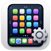

SBTweaker
Home Screen, Dock and animation tweaks in one package
SpringBoard customizations in one package. Every option is off by default; turn on the ones you want under Settings → SBTweaker.
- Home Screen and Dock: custom grid for portrait and landscape, Dock icon count, spacing, icon scale, and Free Icon Placement on iOS 17
- Hide App Library, page indicator offsets, and Spotlight dismissal after opening a result
- Double Tap to Lock on the Home Screen and the Lock Screen
- Lock Screen Timeout: keep the Lock Screen awake longer before it dims
- Icon Layout Backup: restores your Home Screen, folders and Dock after rejailbreaking
- Animations: Drag Coefficient, disable the wake animation, the screen off fade and the unlock icon fly-in
- Inside apps: Fast Page Transitions, Fast Sheets and Fast Copy
Changes apply without a respring wherever SpringBoard allows it.
Information
Changelog
1.5.0 2026-11-17
- Excluded Apps: a new list under Settings → SBTweaker → Inside Apps. SBTweaker does nothing inside the apps you switch on there: Fast Copy, Fast Page Transitions and Fast Sheets stay off in them. Switching an app on applies right away; after switching one off, reopen that app.
- Manual icon layout backup: Back Up Layout Now saves your Home Screen, folders and Dock, and Restore Backup brings that layout back at any time. It is kept separately from the automatic backup and works whether or not that is switched on.
- Double Tap to Lock: switching it on now takes effect immediately, like switching it off.
- Icon Layout Backup: switching the backup off and on again no longer restores the layout from before you switched it off. Layout changes made right after a respring are no longer lost when there was nothing to restore.
- Fast Page Transitions and Fast Sheets: when a sheet opens during a page transition, both are now fast; one of them used to play at stock speed.
- Dock count: the custom count is no longer applied to other single-row layouts once the Dock has been found.
- Reset to Defaults asks for confirmation first.
- Smaller performance improvements: settings are no longer re-read every ten seconds, Fast Copy does less work for each animation inside apps, and less is written to the system log.
Every option is off by default; enable the ones you want under Settings → SBTweaker.
1.4.0 2026-11-14
- Switching features off works right away: turning off Dock count, Dock or Home Screen spacing, Icon Scale, or the master switch for these no longer needs a respring. The Home Screen grid on iOS 17 and later still does, because SpringBoard builds its pages with the grid at launch.
- Spacing starts from your device's own margins: with every extra at 0 the Home Screen and Dock look exactly stock on every iPhone and iPad. If you had adjusted spacing before, check your values after updating, since icons may sit slightly differently.
- Separate Fast Sheets duration: Fast Sheets now has its own duration, separate from Fast Page Transitions. Your current duration is carried over to both.
- Faster default-length animations: Fast Page Transitions and Fast Sheets now also speed up animations that used the system's default length.
- Drag Coefficient: setting it back to 1.0, or switching it off, restores stock animation speed right away.
- Double Tap to Lock: switching it off takes effect immediately.
- Disable Wake Animation is reliable: the screen no longer sometimes fades in anyway.
- Icon Layout Backup: no longer restores an outdated layout if the backup could not be updated, skips restoring when nothing changed, and no longer slows down SpringBoard while saving.
- Settings: number fields accept a decimal comma (1,5) and no longer save the minimum when left empty. The settings page now shows the version, with links to @_kolbicz on X and the source code on GitHub.
- Smaller performance improvements for Home Screen layout, animations inside apps and the page indicator.
Every option is off by default; enable the ones you want under Settings → SBTweaker.
1.3.10 2026-10-23
- Apps no longer crash with Fast Page Transitions, Fast Sheets or Fast Copy: some apps, such as Signal, WhatsApp, the App Store and PingID, could close while a screen opened or closed. SBTweaker changed the timing of an animation the app had marked as read-only; it now speeds up a copy instead.
Every option is off by default; enable the ones you want under Settings → SBTweaker.
1.3.9 2026-10-20
- Sharper, correctly sized icons with Icon Scale: scaling now starts from your device's real icon size instead of assuming a 60 pt icon at 2x. On 3x iPhones such as the Pro Max models, icons are no longer smaller than the setting says, and they're drawn at full resolution. On iPad, pages with widgets keep their own icon size.
- Free Icon Placement on iPad (iPadOS 17): apps now stay on the spot you drop them on, like widgets already did. Rotation keeps working as before.
- Adding widgets with a low Drag Coefficient: icons no longer vanish for a few seconds after you add a widget. While a widget is being added, animations run at normal speed. Your speed comes back once you leave edit mode or open an app, but no sooner than 3 seconds after adding.
Every option is off by default; enable the ones you want under Settings → SBTweaker.
1.3.8 2026-10-19
- Widgets anywhere on a custom grid (iOS 18): with Customize Grid Layout on, widgets can now be placed on any row and column of your grid instead of only on the 2x2 blocks of the stock grid, and they stay under your finger while you drag them. (#2)
- Custom grid pages hold what they show (iOS 17 and 18): Home Screen pages are now created with your custom grid, so a page fits as many icons as it displays and widgets can move into the extra rows and columns.
- Added an opt-in Free Icon Placement switch for iOS 17 under Settings › SBTweaker › Grid and Spacing. Apps and widgets stay on the spot you drop them on, with gaps, like on iOS 18, and your layout survives a respring. With a custom grid, widgets can use any row and column too. Turn it on, then respring. (iOS 18 already does this, so the switch only appears on iOS 17.)
Every option is off by default; enable the ones you want under Settings → SBTweaker.
1.3.7 2026-10-06
- Added an opt-in Fast Sheets option under Settings › SBTweaker › Transitions. Sheets and pop-ups — the share sheet and its AirDrop page, compose screens, alerts — slide up and close as fast as Transition Duration allows, the same setting Fast Page Transitions uses. Swiping a sheet down still follows your finger.
- Fast Copy now also removes the copy/paste menu's appear and disappear animation, not just the delay before it shows.
- Fixed Fast Copy not working in sandboxed apps such as Messages, WhatsApp and Safari. These apps can't read SBTweaker's settings, so SpringBoard now passes every in-app switch to them directly. Changes still apply right away, no respring needed.
- Only the SBTweaker settings page can trigger a respring now; other apps can no longer respring your device through SBTweaker.
- The tweak now uses the same defaults as the settings page everywhere; a few built-in fallbacks (Dock icon count, spacing, icon scale) disagreed.
- Faster and lighter: SpringBoard-only code no longer loads into apps, Double-Tap to Lock on the Lock Screen no longer scans the whole screen on every touch, and Home Screen layout passes skip repeated lookups for App Library and folder grids.
Every option is off by default; enable the ones you want under Settings → SBTweaker.
1.3.6 2026-10-06
- Added an opt-in Fast Page Transitions option under Settings › SBTweaker › Page Transitions. It speeds up the slide when an app opens a new page — a chat, a post, a settings page — and when you go back, including apps with their own transition such as WhatsApp. Transition Duration sets the longest the slide may take: 0.01 s is instant, 1.00 s is about stock speed. Swiping back still follows your finger, and changes apply right away, no respring needed.
- Removed Faster Core Animation. Fast Page Transitions replaces it inside apps, where it usually couldn't read its setting, and its blanket disabling of implicit animations could break controls.
Every option is off by default; enable the ones you want under Settings → SBTweaker.
1.3.5 2026-09-16
- Added an opt-in Lock Screen Timeout option that holds the Lock Screen awake longer before it dims and sleeps, so notifications stay readable. Applies on the next lock, no respring needed. Settings › Display & Brightness › Auto-Lock still caps the total.
- Added opt-in portrait and landscape offsets for the Home Screen page dots / Search indicator, under Grid and Spacing Settings.
- Widened the Dock icon count to 1–8.
- Split Dock spacing into independent left and right values. An existing combined value carries over to both.
Every option is off by default; enable the ones you want under Settings → SBTweaker.
Note on the Dock count: choosing fewer icons than the Dock currently holds moves the extras out to the Home Screen, which is a real layout change. Turn on Save & Restore Icon Layout first if you want a way back.
1.3.4 2026-09-09
- Added an opt-in Spotlight option: opening a search result now dismisses Spotlight and clears its search field, so leaving the app shows the Home Screen instead of the search it was launched from.
- Fixed the icon layout backup leaking into the shared mobile container on roothide; the snapshot now stays inside the randomized jailbreak root.
The Spotlight option is off by default — enable it under Settings → SBTweaker → Spotlight.
Note for roothide users: the backup path fix applies to newly written snapshots. Any snapshot already saved to the old path is no longer read, so let one fresh backup be written before relying on a restore.
1.3.3 2026-08-26
- Fixed custom Home Screen rows and columns reverting to the stock layout when widgets are added on iOS/iPadOS 15.
- Added support for SpringBoard's
SBIconLocationRootWithWidgetspages. - Preserved existing widgets across resprings by removing direct Home Screen model-grid mutation.
- Custom grid sizing now uses SpringBoard layout configuration and list-view metrics.
Both packages support iOS/iPadOS 15 and newer:
- Rootless:
iphoneos-arm64 - Roothide:
iphoneos-arm64e